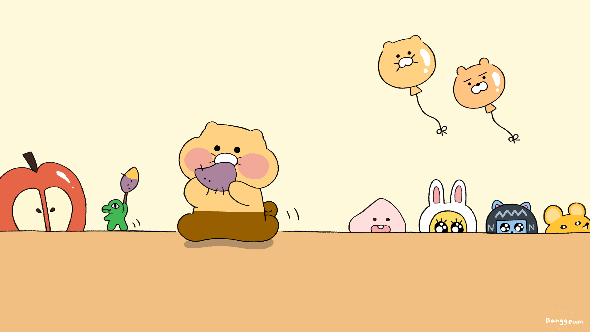
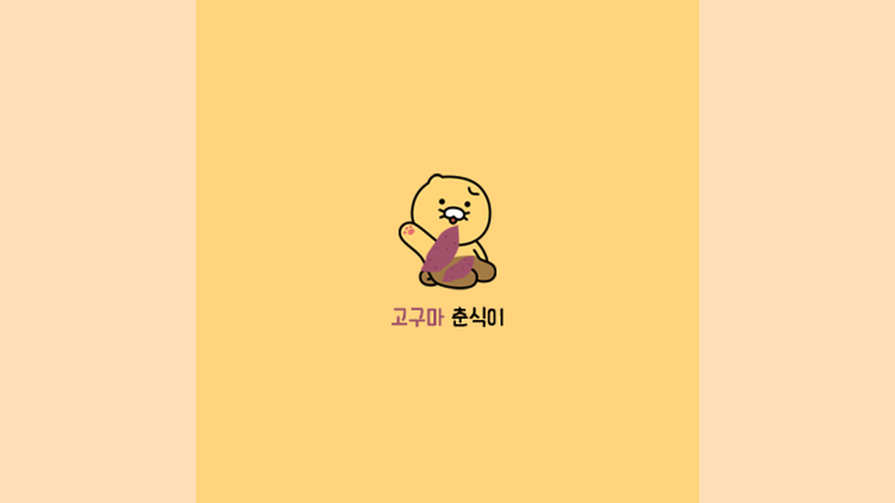

이제부터 넌 춘식이여
춘식이 고구마 모음
소개
연락처


Previous
Next
춘식이 1
고구마 춘식이 1
자세히 보기
춘식이 2
고구마 춘식이 2
자세히 보기
춘식이 3
고구마 춘식이 3
자세히 보기
스트릿 출신 성별 미상의 고양이
라이언의 애완동물. 골판지 상자, 고구마 상자에 들어가 있는 걸 좋아하고, 가장 좋아하는 음식은 고구마. 그리고 제일 좋아하는 장난감은 강아지풀 장난감?